Пять тем, одна механика на каждую: 15 идиом-карточек → 4 уровня упражнений (L1 cloze → L2 sentence transformation → L3 fix-the-mistake + open-ended → L4 Band 7+ structures с cleft / not-only-but / inversion / passive / mixed conditionals / no sooner и т.п.) → Speaking questions трёх уровней (Part 1 warm-up → Part 2 cue-card → Part 3 abstract) → мини-аудио-диалог с 5-6 идиомами. Темы под Speaking Part 1/2/3: Books, Technology, Museums + Art, Bikes + Transport, Home + Hometown.
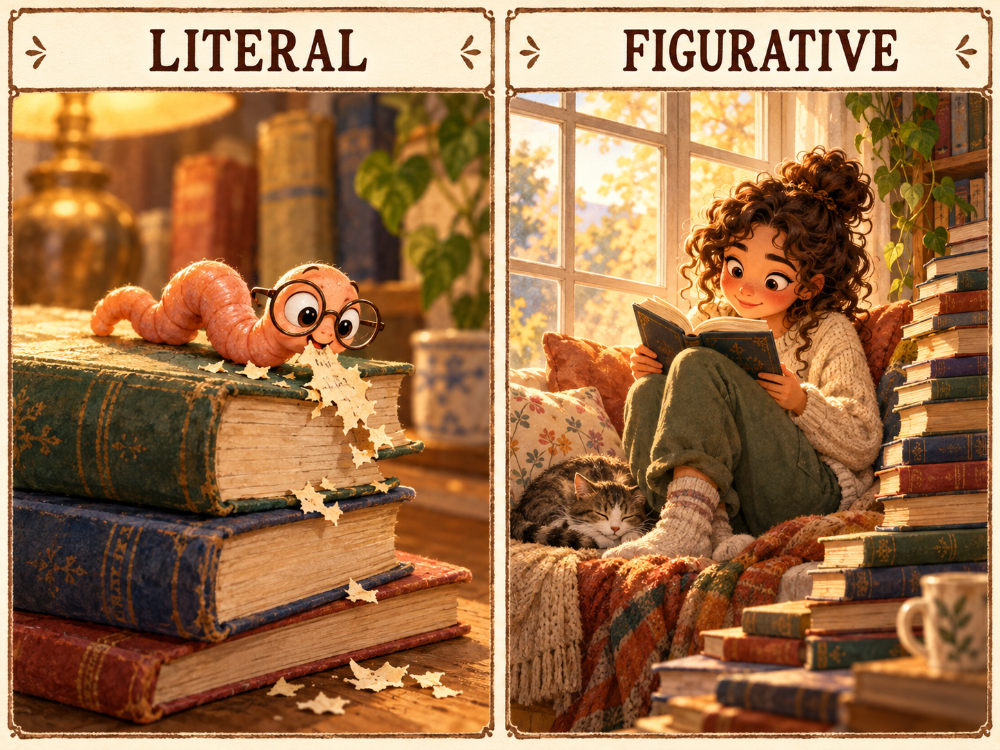
tap to flip →a bookworm/ˈbʊk.wɜːm/
книжный червь
My niece reads a novel every week — she's a complete .
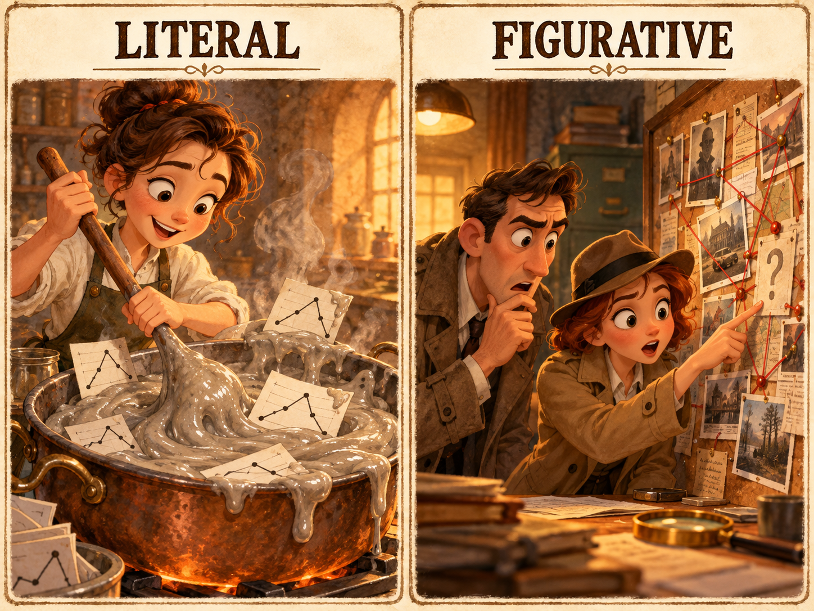
tap to flip →the plot thickens/plɒt ˈθɪk.ənz/
сюжет становится интереснее
A second witness has just come forward — the plot .
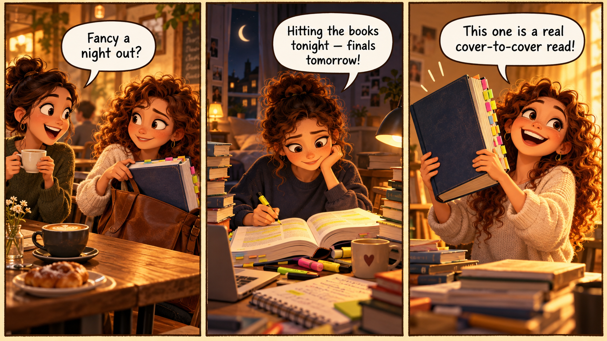
1 · My niece is a complete ; she takes three novels on every holiday.
2 · After a long week, nothing beats curling up with a good on the sofa.
3 · The café looked ordinary from outside, but you shouldn't judge a book — inside it was stunning.
4 · I couldn't stop reading his memoir — it's an absolute .
5 · My final exams start Monday, so this weekend I'll be hitting .
6 · Officially the report was positive, but reading , the team was clearly unhappy.
7 · Our auditor does everything strictly — no shortcuts, no exceptions.
8 · After his heart scare he decided to turn over a new and gave up alcohol.
9 · , honesty matters more than any clever strategy.
10 · He can't hide anything — he's a complete open .
11 · I'll take a leaf out of your and start waking up at six.
12 · Our professor is incredibly — she quotes Dickens and Dostoevsky in the same breath.
13 · Her refusal to answer the question spoke .
14 · Another suspect has been arrested — the plot .
15 · His debut novel is a genuine cover-to- read.
She loves reading more than anything else.
→ Use: bookworm
She's a complete bookworm.
The thriller was so exciting that I couldn't put it down.
→ Use: page-turner
The thriller was a real page-turner — I couldn't put it down.
The company always follows every official rule to the letter.
→ Use: by the book
The company does absolutely everything by the book.
Behind her polite words I could sense she was disappointed.
→ Use: read between the lines
If you read between the lines of her polite words, you could tell she was disappointed.
After New Year he decided to change his lifestyle completely.
→ Use: turn over a new leaf
After New Year he decided to turn over a new leaf.
His silence at the trial said more than any confession could have.
→ Use: speak volumes
His silence at the trial spoke volumes.
I'll copy your morning routine and start running at six.
→ Use: take a leaf out of
I'll take a leaf out of your book and start running at six.
You can see every emotion on his face — he can hide nothing.
→ Use: an open book
He's a complete open book — you can see every emotion on his face.
→ The idiom contradicts the context. Rewrite with the correct meaning.
She's not much of a bookworm — she never opens a book.
→ The idiom is "new leaf", and the behaviour should be positive.
He turned over a new leaf and gave up drinking for good.
→ The idiom uses singular, not plural.
I'm doing it by the book, every single step.
→ Poker face and open book are opposites.
Her poker face is impossible to read — she's definitely not an open book.
1. If you read between the lines of a Russian job ad, you usually find that …
2. The last book I'd call a real page-turner was … because …
3. In my book, the single best way to prepare for IELTS is …
His silence at the trial was the clearest message of all.
→ Use: speak volumes
It was his silence at the trial that spoke volumes.
Her favourite weekend activity is reading on the sofa.
→ Use: curl up with a good book
What she loves most at weekends is to curl up with a good book.
She reads huge amounts and she catches every subtle meaning.
→ Use: bookworm + read between the lines
Not only is she a bookworm, but she also reads between the lines perfectly.
Students almost never study this intensely.
→ Use: hit the books
Rarely do students hit the books as intensely as this group.
People say that his memoir is incredibly engrossing.
→ Use: page-turner
His memoir is said to be a real page-turner.
If you understand subtext, it is a crucial skill in diplomacy.
→ Use: read between the lines
Reading between the lines is a crucial skill in diplomacy.
After she had studied intensely all night, she passed the exam easily.
→ Use: hit the books
Having hit the books all night, she passed the exam easily.
People who have read widely usually write more clearly.
→ Use: well-read
People well-read in several fields usually write more clearly.
If I had followed her example back then, I would be in a better position now.
→ Use: take a leaf out of sb's book
If I had taken a leaf out of her book back then, I would be in a much better position now.
The moment she started studying, the fire alarm rang.
→ Use: hit the books
No sooner had she hit the books than the fire alarm rang.
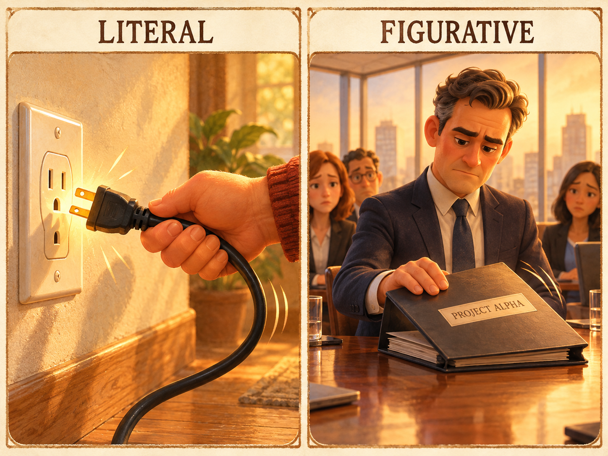
tap to flip →to pull the plug/pʊl ðə plʌɡ/
закрыть, свернуть проект
After losing money for two years, the start-up on its streaming service.
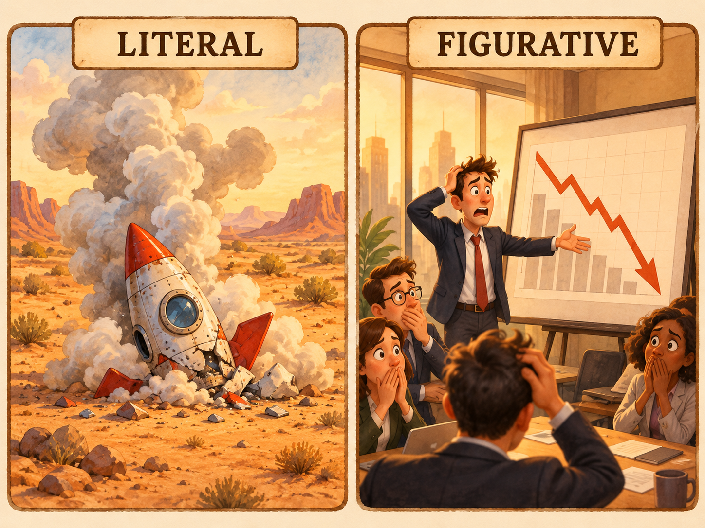
tap to flip →to crash and burn/kræʃ ənd bɜːn/
с треском провалиться
The ambitious launch when the login servers collapsed.
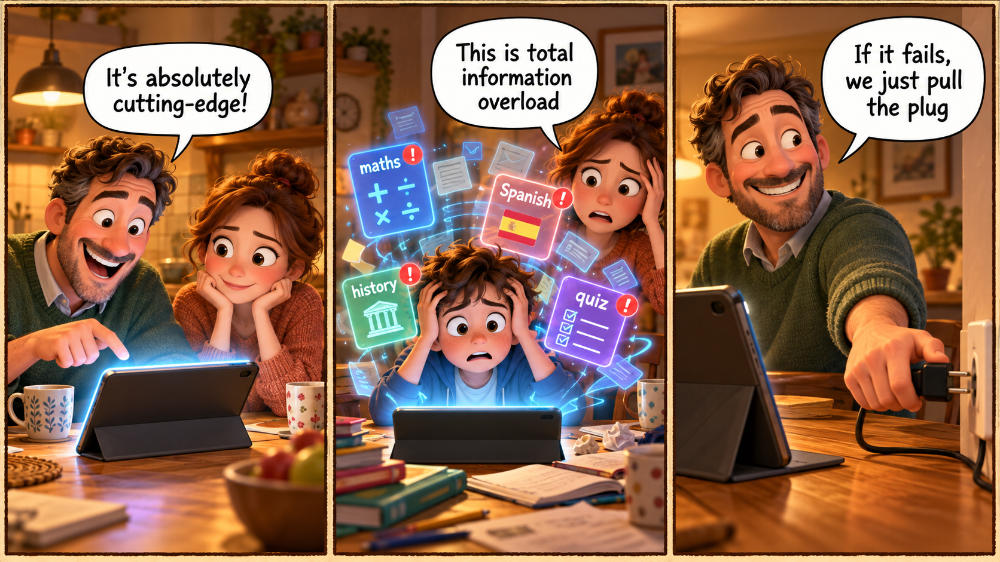
1 · The hospital invested in scanners to improve diagnosis.
2 · Smartphones are a : brilliant for work, awful for sleep.
3 · Our office software is five years old — we're really .
4 · Teenagers today are and expect every service to have an app.
5 · Scrolling news feeds all morning left me with complete .
6 · After losing money for two years, the start-up finally pulled on its streaming service.
7 · The new wireless headphones are — ready in seconds.
8 · The amateur recipe video went overnight and reached fifty million views.
9 · Our team is finally on the same — the project moves twice as fast.
10 · The ambitious launch crashed and when the login servers collapsed.
11 · Restarting the router is a ; the actual bug is in the firmware.
12 · Running AI tools in production is risky without a fallback.
13 · The engineers really thought outside with the foldable screen.
14 · The new banking app is far more than the old one.
15 · After the outage, the payment system is finally up and again.
The research team uses the most advanced AI models available.
→ Use: cutting-edge
The research team uses cutting-edge AI models.
Automation brings both huge gains and serious risks.
→ Use: double-edged sword
Automation is a classic double-edged sword — huge gains come with serious risks.
After burning through all the funding, the company stopped the project.
→ Use: pull the plug
After burning through all the funding, the company pulled the plug on the project.
The video spread across the internet incredibly fast.
→ Use: go viral
The video went viral almost overnight.
The engineers found a creative solution nobody else had considered.
→ Use: think outside the box
The engineers really thought outside the box and found a solution nobody else had considered.
The launch failed dramatically on day one.
→ Use: crash and burn
The launch crashed and burned on day one.
Our marketing and product teams understand each other immediately.
→ Use: same wavelength
Our marketing and product teams are on exactly the same wavelength.
The device works instantly without any installation.
→ Use: plug and play
The device is completely plug and play — no installation required.
→ "Cutting-edge" contradicts "released in 2010".
Our software is far from cutting-edge — it was released in 2010.
→ "Plug and play" means no setup.
The new printer is anything but plug and play — you need two hours just to install drivers.
→ Idiom structure is wrong.
The CEO pulled the plug on the project after she changed her mind.
→ Verb tense / form.
The video went viral in a few hours.
1. The biggest double-edged sword in modern technology, in my opinion, is …
2. A piece of technology I'd happily pull the plug on would be …
3. The last time I had serious information overload was when …
The CFO closed the project after reviewing the numbers.
→ Use: pull the plug
It was the CFO who pulled the plug on the project after reviewing the numbers.
The feature our users most appreciate is the simplicity.
→ Use: user-friendly
What our users most appreciate is how user-friendly the app is.
The app has the newest features and ordinary people can use it immediately.
→ Use: cutting-edge + user-friendly
Not only is the app cutting-edge, but it is also remarkably user-friendly.
A rollout of this scale almost never avoids a dramatic failure.
→ Use: crash and burn
Seldom does a rollout of this scale avoid crashing and burning.
People say that the new release spread extremely quickly online.
→ Use: go viral
The new release is said to have gone viral within hours.
If you run very new, unstable software in production, it is risky.
→ Use: bleeding-edge
Running bleeding-edge software in production is risky without a fallback.
After it had been restarted, the system worked normally again.
→ Use: up and running
Having been restarted, the system was finally up and running again.
Apps that are easy to use attract older customers.
→ Use: user-friendly
Apps user-friendly enough for older customers attract a far wider audience.
If we had chosen the newer platform earlier, we would not be struggling now.
→ Use: behind the times
If we had moved earlier, we would not be so behind the times now.
The moment the servers went online, demand collapsed them.
→ Use: up and running + crash and burn
No sooner were the servers up and running than they crashed and burned under the load.
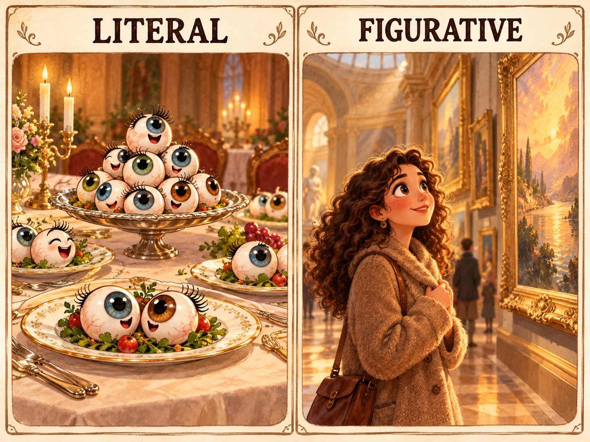
tap to flip →a feast for the eyes/fiːst/
пир для глаз
The Monet room was an absolute .
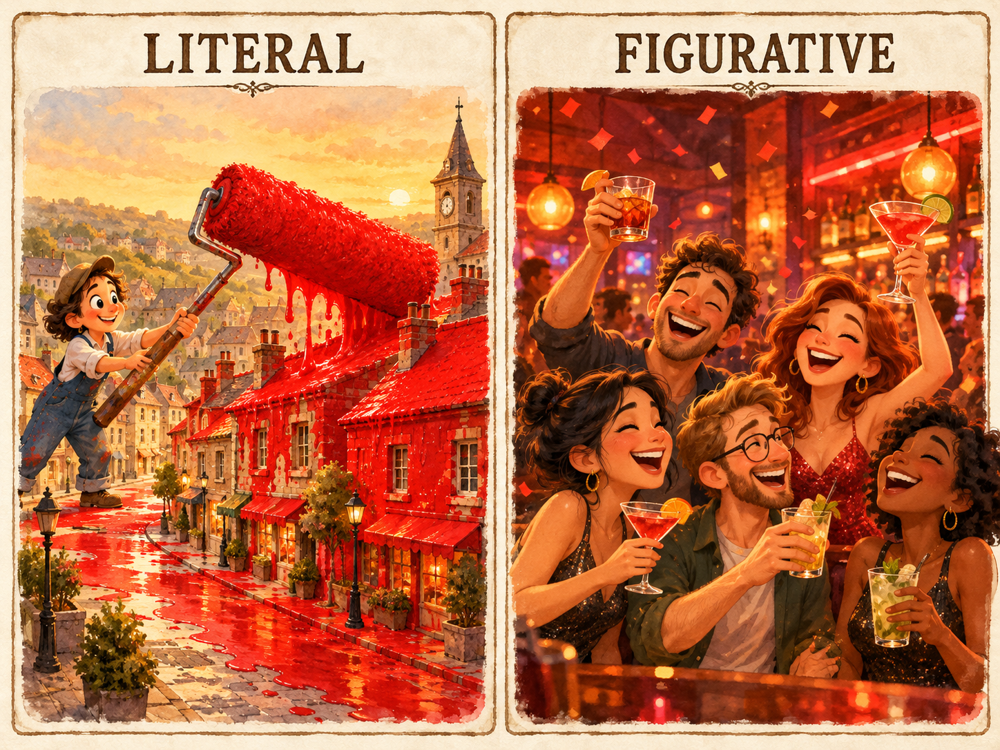
tap to flip →to paint the town red/peɪnt ðə taʊn red/
зажечь, оторваться по полной
After the exhibition opening, the whole crew went out to .
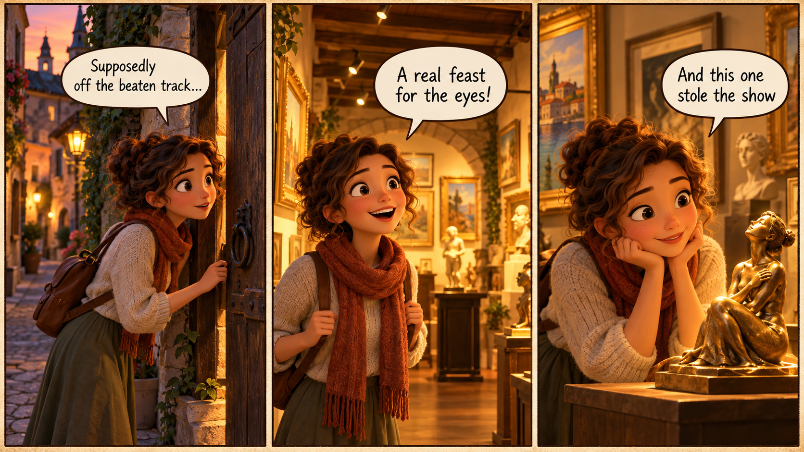
1 · That ceramics workshop is a — tourists never find it.
2 · The spring flower show was a complete feast for .
3 · The main painting was fine, but a tiny etching next to it .
4 · The curator's talk made me see 17th-century portraits in a .
5 · The artist uses rough brushstrokes and a lot to the imagination.
6 · The village chapel is miles off the beaten , but the frescoes are breathtaking.
7 · His final dessert was quite literally a .
8 · The series' portrait of post-Soviet life is painfully true to .
9 · After the opening the whole crew went out to paint the town .
10 · Her career has — from street artist to national gallery.
11 · Zoom in on the brushstrokes, but keep the in mind.
12 · Her debut installation made a huge at the Biennale.
13 · The gallery's founder was a figure who hosted midnight tours.
14 · A few personal anecdotes really added to the lecture.
15 · A single brush contemporary art at sixteen changed her career path.
The little bookshop is wonderful but almost unknown.
→ Use: hidden gem
The little bookshop is a real hidden gem — almost nobody knows about it.
The sunset over the harbour was visually stunning.
→ Use: feast for the eyes
The sunset over the harbour was an absolute feast for the eyes.
The curator made me see Renaissance portraits from a totally new angle.
→ Use: new light
The curator made me see Renaissance portraits in a completely new light.
The chapel is far from any tourist route.
→ Use: off the beaten track
The chapel is miles off the beaten track.
Her first solo show attracted enormous attention from critics.
→ Use: make a splash
Her first solo show made a huge splash with the critics.
He returned to the same village where he had learned to paint.
→ Use: come full circle
His career has come full circle — he's back in the village where he first learned to paint.
The documentary felt painfully realistic.
→ Use: true to life
The documentary felt painfully true to life.
A tiny unexpected sculpture attracted all the attention away from the main piece.
→ Use: steal the show
A tiny unexpected sculpture completely stole the show from the main piece.
→ A "hidden gem" is unknown; the context contradicts that.
The gallery is hardly a hidden gem — half of London queues outside it every weekend.
→ "Leave to the imagination" = NOT show everything. Context is contradictory.
The exhibition left a lot to the imagination, so I had to invent much of the story myself.
→ "Make a splash" = attract attention. Contradiction.
The debut show failed to make a splash — nobody came and no newspaper mentioned it.
→ Trafalgar Square is extremely touristy.
We definitely stayed on the beaten path — our first stop was Trafalgar Square.
1. The most hidden gem of a museum in my country is …
2. A piece of art that genuinely made me see life in a new light was …
3. If I had to describe a larger-than-life creative person I know, it would be … because …
The tiny bronze was what everyone remembered from the show.
→ Use: steal the show
It was the tiny bronze that stole the show.
She most values quiet, unknown places tourists have missed.
→ Use: hidden gem
What she values most are the hidden gems that tourists have missed.
The exhibition looked gorgeous and sold out within days.
→ Use: feast for the eyes + make a splash
Not only was the exhibition a feast for the eyes, but it also made a huge splash with critics.
You almost never find such an original gallery outside the main districts.
→ Use: off the beaten track
Rarely do you find such an original gallery off the beaten track.
People said that her debut had attracted the whole art world's attention.
→ Use: make a splash
Her debut was said to have made a huge splash across the art world.
When you look at Picasso's early work from a new angle, it becomes much more moving.
→ Use: see in a new light
Seeing Picasso's early work in a new light makes it much more moving.
After she had completed her first solo show, she was invited to the Biennale.
→ Use: make a splash
Having made such a splash with her first solo show, she was invited to the Biennale.
Galleries that are off the main tourist route often have better collections.
→ Use: off the beaten track
Galleries off the beaten track often have far better collections.
If I had visited the museum years ago, I would understand this art much better now.
→ Use: see in a new light
If I had visited the museum years ago, I would be seeing this art in a very different light now.
As soon as we entered the small gallery, we realised it was special.
→ Use: hidden gem
No sooner had we stepped inside than we realised it was a true hidden gem.
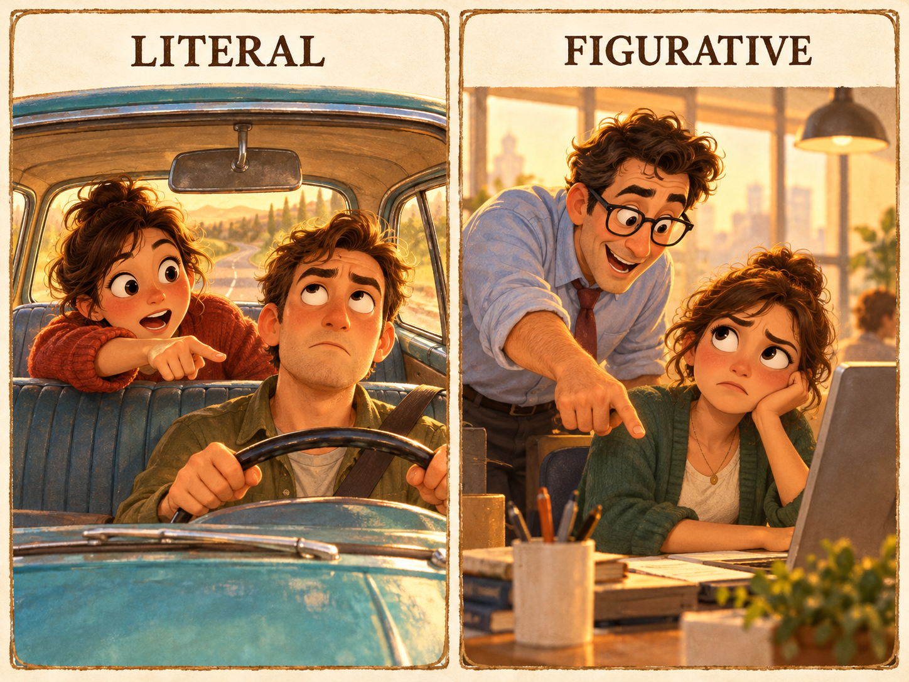
tap to flip →a backseat driver/ˈbæk.siːt ˈdraɪ.və/
тот, кто лезет с советами
She's a terrible — she comments on every turn I make.
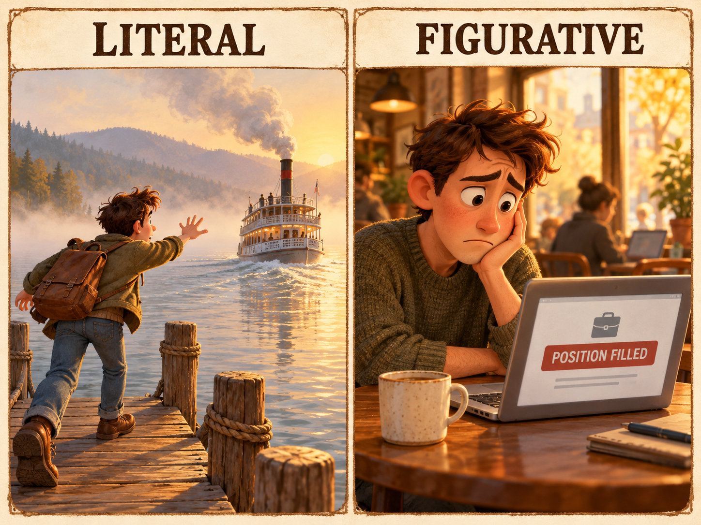
tap to flip →to miss the boat/mɪs ðə bəʊt/
упустить момент
If you don't apply by Friday, you'll completely.
1 · After maternity leave, it took her a month to get back in .
2 · I hadn't played the piano for years, but it's like riding a — my fingers remembered.
3 · He loved life in the fast until burnout hit at thirty.
4 · The flights were cheap in April, but we hesitated and missed .
5 · The traffic is awful at this hour — let's hit the early tomorrow.
6 · Our guide really went the extra and arranged a sunset viewpoint for us.
7 · Stop being a — I know how to get there.
8 · The project was fine for two weeks, then the wheels fell .
9 · The CFO put the on all new hiring until the next quarter.
10 · The first year of the business was a very .
11 · Shall we have one for the before you head home?
12 · He wanted the promotion, so he was careful not to rock the .
13 · Now that the merger is finalised, the new CEO is firmly in the driver's .
14 · A healthy relationship is a .
15 · The reform started well but ran out of by the second year.
He returned to playing tennis after a two-year break.
→ Use: get back in the saddle
He got back in the saddle after a two-year break from tennis.
The low fares were available last week, but we delayed and lost the chance.
→ Use: miss the boat
We delayed too long and completely missed the boat on last week's low fares.
The hotel manager did much more than any guest would expect.
→ Use: go the extra mile
The hotel manager really went the extra mile for us.
The whole project started to collapse one problem after another.
→ Use: the wheels fall off
The project was going well, and then the wheels fell off completely.
She avoided raising difficult issues at the staff meeting.
→ Use: rock the boat
She was careful not to rock the boat at the staff meeting.
Any strong friendship requires effort from both people.
→ Use: two-way street
Any strong friendship is a two-way street.
The campaign started with huge enthusiasm but gradually lost momentum.
→ Use: run out of steam
The campaign started strong but ran out of steam over time.
The CFO decided to slow down the hiring plan.
→ Use: put the brakes on
The CFO decided to put the brakes on the hiring plan.
→ "Bumpy ride" means difficult, not smooth.
Our start-up definitely did not have the smoothest ride — it was a real bumpy ride.
→ "Miss the boat" = lose the chance.
He didn't miss the boat — he got the promotion the same day he applied.
→ Contradiction: "rock the boat" means to raise trouble.
She hates to rock the boat, so she never raises uncomfortable topics.
→ "In the driver's seat" = in control.
The intern was not in the driver's seat and had no decision-making power.
1. The last time I had to get back in the saddle after a long break, it was …
2. If I had three days to hit the road anywhere in Europe, I would …
3. One moment at work when the wheels really fell off was …
His confidence helped him return to competition after the injury.
→ Use: get back in the saddle
It was his confidence that helped him get back in the saddle after the injury.
They regret their late response to the offer most of all.
→ Use: miss the boat
What they regret most is missing the boat on the offer.
The guide was very experienced and did more than any guest expected.
→ Use: go the extra mile
Not only was the guide very experienced, but he also went the extra mile for every single guest.
An intern is almost never allowed to make the big calls.
→ Use: in the driver's seat
Rarely is an intern put in the driver's seat for the big calls.
People say that the CFO slowed down the hiring plan.
→ Use: put the brakes on
The brakes are said to have been put on the hiring plan by the CFO.
If you keep giving advice from the sidelines, it is irritating.
→ Use: backseat driver
Being a backseat driver is irritating for everyone else involved.
After the reform had lost momentum after year one, it never recovered.
→ Use: run out of steam
Having run out of steam after year one, the reform never recovered.
A friendship that requires effort from both people is a strong one.
→ Use: two-way street
Any friendship worth keeping is a two-way street.
If we had left earlier, we would already be on the coast by now.
→ Use: hit the road
If we had hit the road earlier, we would already be on the coast by now.
The moment the campaign launched, problems began one after another.
→ Use: the wheels fall off
No sooner had the campaign launched than the wheels fell off.
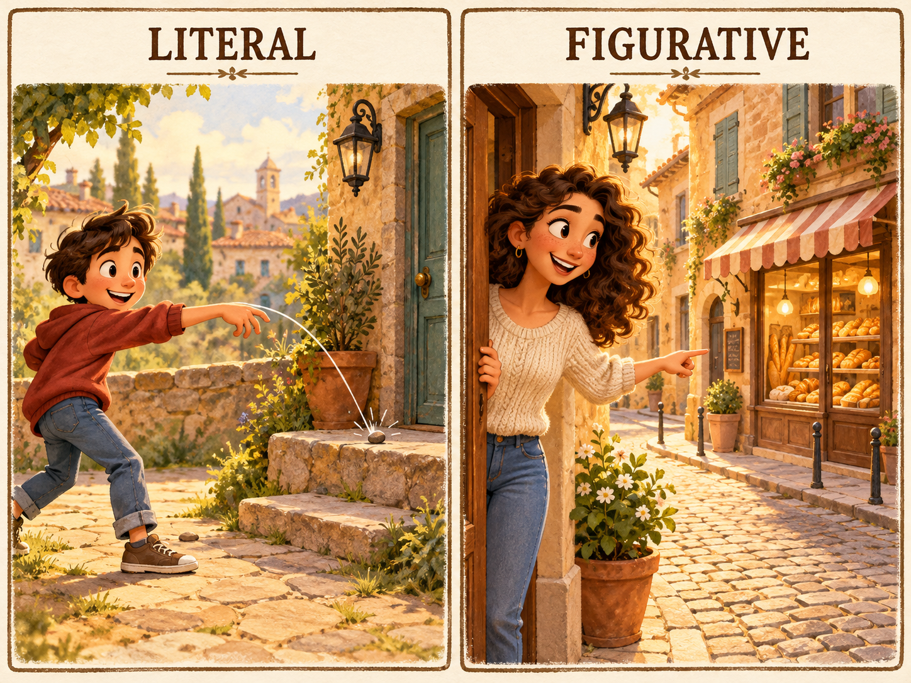
tap to flip →a stone's throw away/stəʊnz θrəʊ/
в двух шагах
The bakery is just a from our flat.
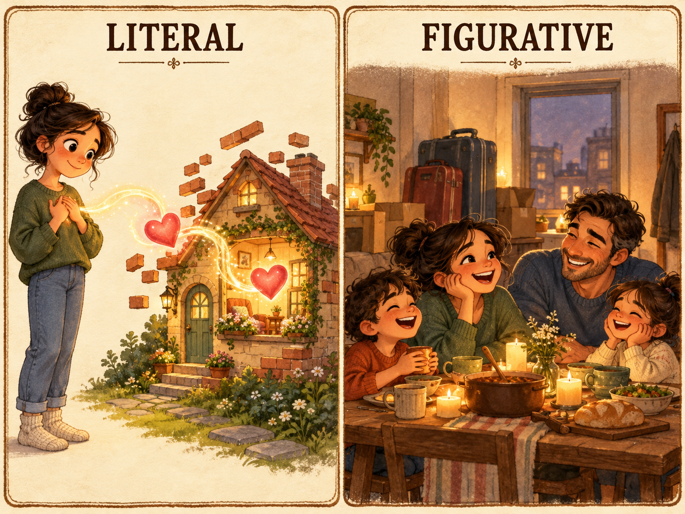
tap to flip →home is where the heart is/həʊm/
дом там, где сердце
She always says — any flat with her kids feels like home.
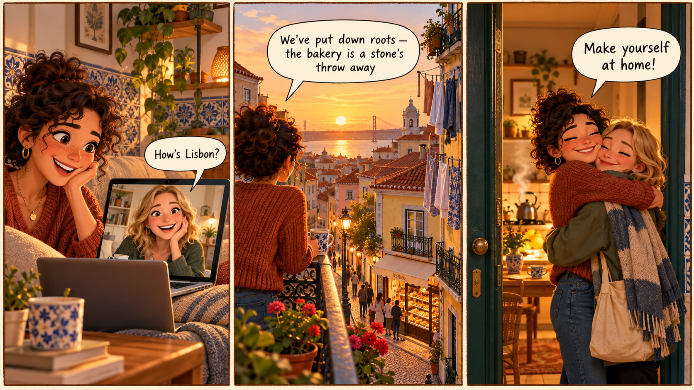
1 · After the long flight she dropped her bags and sighed, "."
2 · Even on the first day of the course I felt completely at .
3 · The bakery is just a stone's from our place.
4 · They loved travelling, but eventually decided to put down in a small coastal town.
5 · However lovely the hotel, there's no place like .
6 · My father is a creature of — he's eaten the same breakfast for forty years.
7 · Come in, make yourself at — I'll put the kettle on.
8 · After our daughter was born, we realised home is where the is.
9 · The documentary about carers really hit .
10 · The marathon winner was welcomed back as a .
11 · The restaurant proudly champions vegetables and local wine.
12 · Three teenage boys will eat you out of house and in a week.
13 · The little café near the office is a real home for me.
14 · The food was fine but nothing to .
15 · Years of ignored maintenance have — the roof is leaking everywhere.
After years of constant moving, they decided to settle down in one city.
→ Use: put down roots
After years of constant moving, they decided to put down roots in one city.
The supermarket is a very short walk from our flat.
→ Use: stone's throw
The supermarket is just a stone's throw from our flat.
I always relax and feel comfortable in that little bookshop café.
→ Use: home from home
That little bookshop café is a real home from home for me.
The film about teenage carers felt painfully personal to me.
→ Use: hit close to home
The film about teenage carers really hit close to home for me.
The hotel was pleasant but nothing I'd specially recommend.
→ Use: nothing to write home about
The hotel was pleasant but nothing to write home about.
All those past decisions we delayed are now causing serious problems.
→ Use: come home to roost
All the decisions we delayed have come home to roost and are causing serious problems now.
My uncle has the same routine every single morning, year after year.
→ Use: creature of habit
My uncle is a true creature of habit — the same routine every single morning, year after year.
The three teenagers finished all the food in the fridge in two days.
→ Use: eat sb out of house and home
The three teenagers ate us out of house and home in two days.
→ "A stone's throw" means very close.
The gallery is far from a stone's throw away — it took us two hours by car.
→ "Put down roots" = settle long-term.
He never put down roots — he moved to a new city every year.
→ "Nothing to write home about" = unimpressive.
The dinner was absolutely stunning — definitely something to write home about.
→ "Creature of habit" contradicts "loves surprises".
My cousin loves surprises; he's anything but a creature of habit.
1. The one place that is a real home from home for me is …
2. A news story that hit really close to home for me recently was …
3. If I had to describe a hometown hero from where I grew up, it would be … because …
His parents' kitchen was what felt most like home to him.
→ Use: feel at home
It was his parents' kitchen that always made him feel at home.
What she really wanted was to settle down somewhere permanently.
→ Use: put down roots
What she really wanted was to put down roots somewhere permanently.
The flat is very close to the bakery and the park is nearby too.
→ Use: a stone's throw away
Not only is the flat a stone's throw away from the bakery, but the park is also just around the corner.
A documentary almost never feels this personally relevant.
→ Use: hit close to home
Rarely does a documentary hit as close to home as this one.
People said that the ignored repairs were causing serious damage now.
→ Use: come home to roost
Years of ignored repairs are said to have come home to roost.
If you settle in one city for the long term, it brings real stability.
→ Use: put down roots
Putting down roots in one city brings real stability.
After she had lived abroad for years, she still believed her hometown was best.
→ Use: there's no place like home
Having lived abroad for years, she still believed there's no place like home.
Vegetables that are produced locally taste noticeably better.
→ Use: home-grown
Home-grown vegetables taste noticeably better than imported ones.
If I had settled in Lisbon ten years ago, I would be fluent in Portuguese by now.
→ Use: put down roots
If I had put down roots in Lisbon ten years ago, I would be fluent in Portuguese by now.
The moment we arrived, the kettle was on and we were told to relax.
→ Use: make yourself at home
No sooner had we arrived than we were told to make ourselves at home.
IELTS Idiom Pack · 5 topics · 75 idioms · pair Lab for Varya + Nenarkomova · back to IELTS Lab